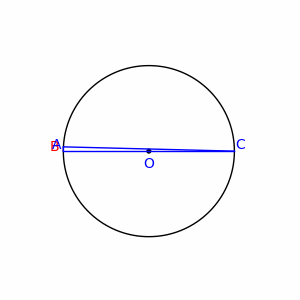

Thales' Theorem
theorem#/media/File:Animatedillustrationofthales_theorem.gif)" /> Image Credits: Wikipedia
Thales' Theorem is a simple yet important geometrical result which describes the relationship between inscribed right angles and circles. A special case of the inscribed angle theorem, Thales' Theorem is as follows:
Let and be two points on the circumference of some circle such that is a diameter of . If a point is placed anywhere on the circumference of (other than or ), then will always be a right angle.
Using the inscribed angle theorem, it also follows that the reverse of this statement holds. Given any 3 points on the circumference of such that , must be a diameter of the circle. We now present two different approaches to proving Thales'.
A proof via inscribed angle theorem.
Consider a circle with center and two diametrically opposite points on the circumference of. Since points are all co-linear, it follows that .
By the inscribed angle theorem, we know that any angle inscribed in will be half of the central angle which subtends the same arc on . In other words, if a point is placed on the circumference of , then angle will be half of angle . Since we have that , it follows that
Thales' theorem has many elegant applications to pure geometry. However, since Thales' often arises in coordinate geometry, let's take a look at a proof of Thales' which uses just that.
A proof via coordinate geometry.
Consider a circle of radius located at the origin. Notice that is described by the equation . Consider the two diametrically opposite points and located at the intersection of with the -axis. Place a third point anywhere on the upper half of the circumference of .
Pythagoras' theorem guarantees that in a triangle with side lengths , with being the longest side, if and only if the triangle is a right triangle. Therefore, we will show that in the diagram to the right by showing that .
Using Pythagoras' theorem, we can determine the legnths of each side as follows
Next, observe that
Recall that since the point was chosen on the circumference of , it must satisfy . Using this to simplify the equation above:
Since we have shown that , we have also proved that which finishes our proof of Thales'.
There are many other ways to prove Thales', some using pure geometry, some using trigonometry, and some even using complex numbers! We encourage you to explore and try to come up with your own unique proof of Thales'. If you do manage to come up with your own proof, great! Just don't get too excited and sacrifice an ox (see entry "Thales' theorems" on this page for more details).
Here are a couple problems centered around Thales' for practice. The first few aren't too bad, but be careful, the last one is quite tricky!
Circle is placed in the 2D-plane with radius and its center placed on the -axis. intersects the -axis at both the point and the origin (labeled ).
Circle is then drawn with twice the radius of circle such that also intersects and .
If circle intersects the -axis at points and , find the length of segment .
Since the -axis and -axis are perpendicular, . Combined with the fact that is inscribed in , Thales' theorem tells us that is a diameter of .The problem is finished by using Pythagorean theorem on to get .
Circles and are co-centric at point with circle inside circle . Line segment is a cord of circle and is tangent to circle at point . Line segment is a cord of circle and is perpendicular to segment .
If has length 1 and has length 2, find the radius of the inner circle
Use the Pythagorean theorem on to find once you've found the length of .
By Pythagorean Theorem, . Since , Thales' guarantees that is a diameter of the outer circle. Since both circles share the same center , we know that passes through the center of both circles. Therefore, since it is a radius of the outer circle.By symmetry, we know that is the midpoint of and therefore .
Finally, using Pythagorean theorem on , we get .
This last one can be a bit tricky.

Circle is drawn with perpendicular cords and with lengths 3 and 4, respectively. Circle is then drawn such that is a diameter of . Finally, a line is drawn through point perpendicular to . Let point be the other intersection of this line with circle .
Find the length of segment .
Draw a perpendicular line from point to and label their intersection . Notice that is parallel to . Do and have the same length? (Use Thales!)
Consider using segments and to calculate the area of . How else can we determine the area of ?
Draw a perpendicular line from point to and label their intersection . Notice that is parallel to . By Thales', we know that so is actually a rectangle and therefore and .By pythagorean theorem, we have . Since segments and are perpendicular, the area of triangle is 6. We can also find the area of triangle by using segments and , specifically.
Since , it follows from Pythagorean theorem that
Note by
Trevor Arashiro
1 year, 2 months ago
Easy Math Editor
This discussion board is a place to discuss our Daily Challenges and the math and science related to those challenges. Explanations are more than just a solution — they should explain the steps and thinking strategies that you used to obtain the solution. Comments should further the discussion of math and science.
When posting on Brilliant:
*italics*or_italics_**bold**or__bold__paragraph 1
paragraph 2
[example link](https://brilliant.org)> This is a quote# I indented these lines # 4 spaces, and now they show # up as a code block. print "hello world"\(...\)or\[...\]to ensure proper formatting.2 \times 32^{34}a_{i-1}\frac{2}{3}\sqrt{2}\sum_{i=1}^3\sin \theta\boxed{123}Comments
For the last question, there is a slicker solution involving similar triangles (△ABC∼△BEA), and the answer immediately follows after finding the length AC.
Log in to reply
There certainly is! However, i wrote this article assuming nothing about readers’ background in geometry. Many people learn Thales’ before similar triangles so I wanted to make sure everyone could understand it.
@Trevor Arashiro How you made these switches of 'solution' and 'hint'?
Log in to reply
Yes, even I want to know!
The last question has a solution using trigonometry as well, and the answer comes out without much effort
Log in to reply
But I agree that your solution is much more elegant and also useful for learners of pure geometry